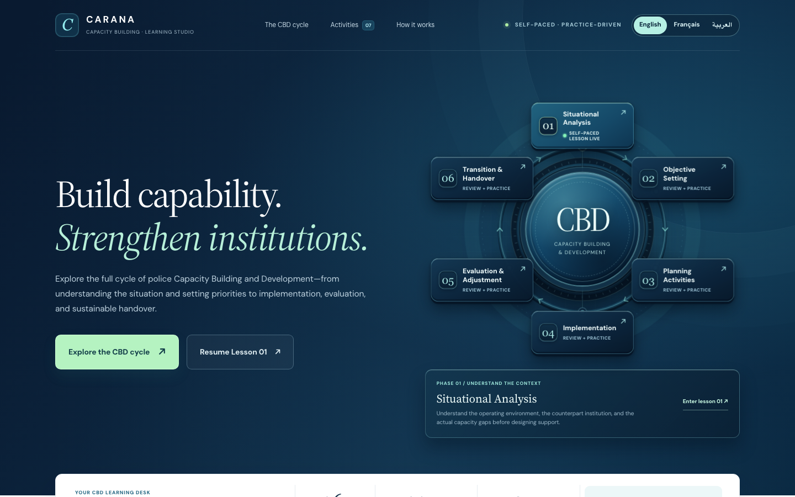
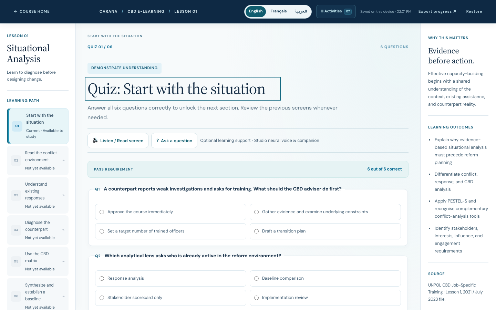
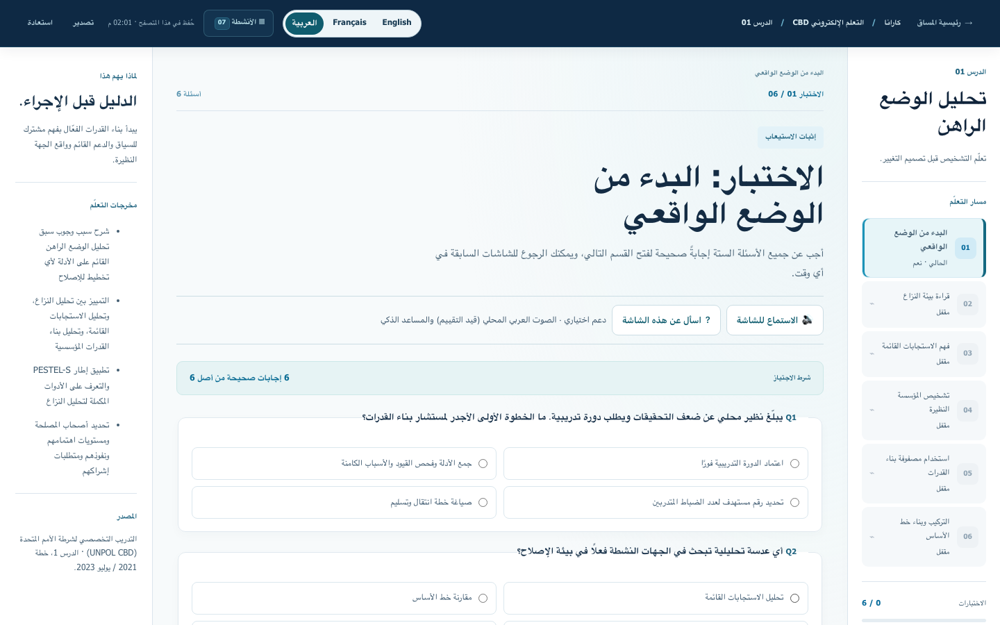
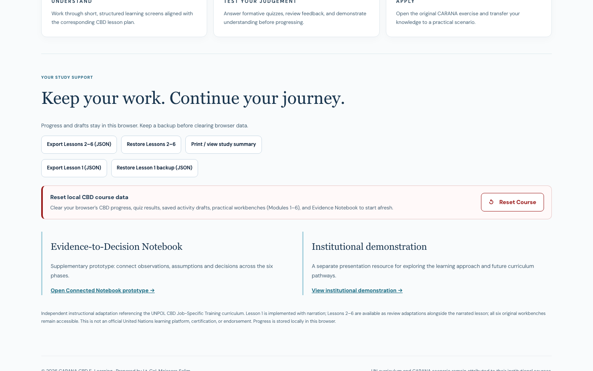
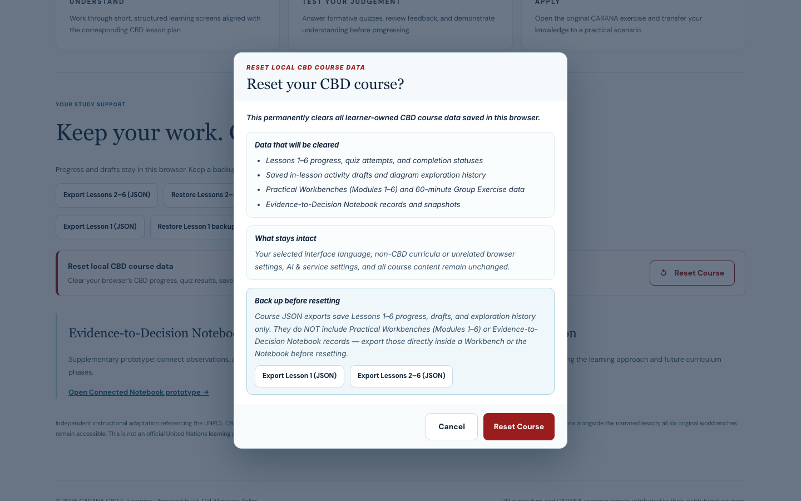
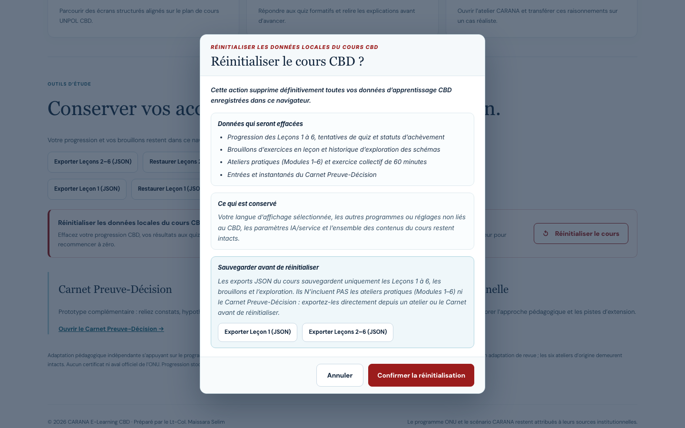
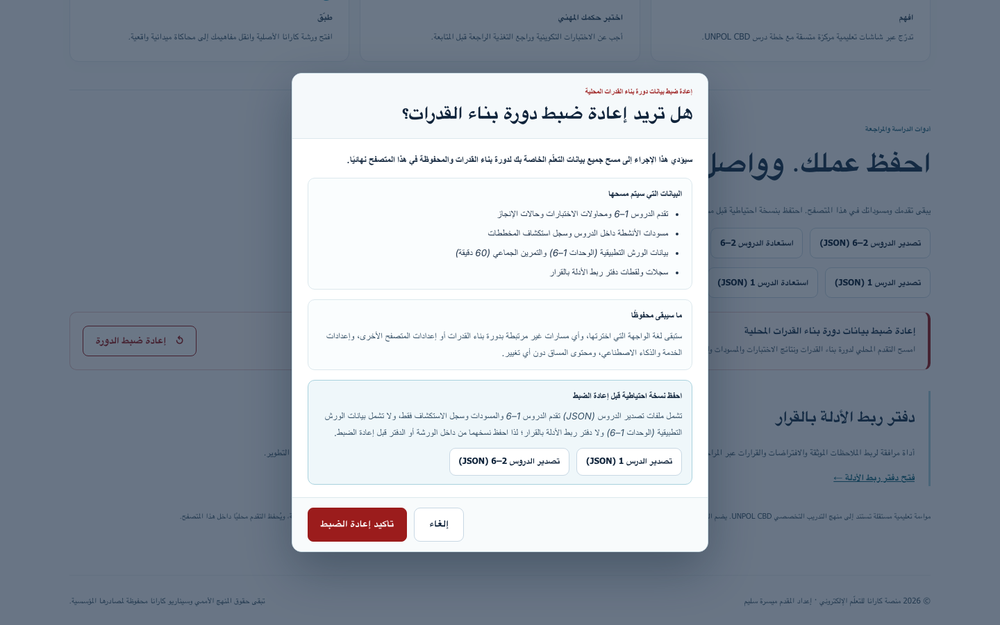
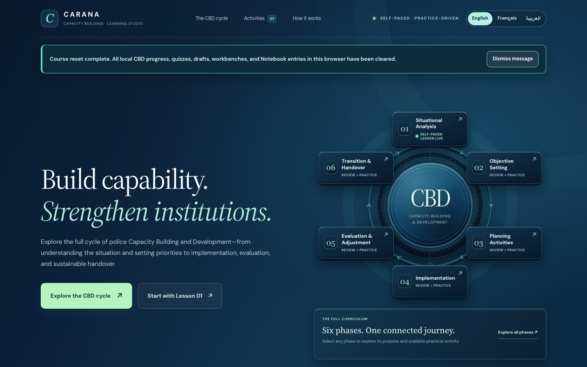

EN Quiz · FR Quiz · AR اختبار / الاختبار across headings, nav rails, progress counters, study guidance, and results.
Clears L1 (carana_cbd_course_v1), L2–6 (carana_learning_v1 CBD entries), Workbenches 1–6 (carana_cbd_lab_v1), Notebook (carana_notebook_v1), Exploration (carana_exploration_v1 CBD keys), and Group Exercise (carana_cbd_group_activity_v1).
Confirmation modal offers Lesson 1 and Lessons 2–6 JSON exports beforehand and explicitly discloses that Modules 1–6 Workbenches and Evidence Notebook must be exported separately inside those tools.
Preserves selected UI language (carana_lang_v1), non-CBD curricula (e.g. mma-*), Run 10 Living CBD Orbit layout & hover stability, AI gateway auth, Node 22 runtime, and billing config.
Verified Visual & Workflow Receipts





<dialog> via showModal(), autofocus on Cancel, pre-reset JSON exports, and explicit disclosure that Modules 1–6 and Notebook are excluded from course JSON exports.


Start with Lesson 01, 0/06) with a persistent dismissible role="status" confirmation banner; zero CBD state returns across reload.